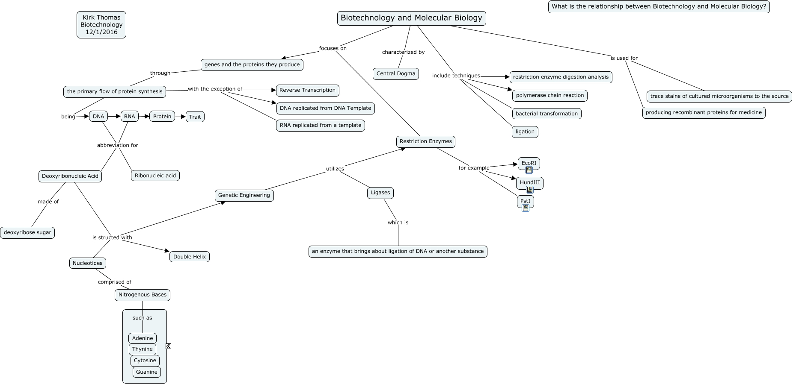

WARNING:
JavaScript is turned OFF. None of the links on this concept map will
work until it is reactivated.
If you need help turning JavaScript On, click here.
This Concept Map, created with IHMC CmapTools, has information related to: Molecular Biology, Nucleotides comprised of Nitrogenous Bases, Ligases which is an enzyme that brings about ligation of DNA or another substance, RNA ???? Protein, Genetic Engineering utilizes Restriction Enzymes, Nitrogenous Bases such as Adenine, Genetic Engineering utilizes Ligases, RNA abbreviation for Ribonucleic acid, the primary flow of protein synthesis being DNA, DNA ???? RNA, Biotechnology and Molecular Biology is used for producing recombinant proteins for medicine, Biotechnology and Molecular Biology include techniques polymerase chain reaction, genes and the proteins they produce through the primary flow of protein synthesis, DNA abbreviation for Ribonucleic acid, DNA abbreviation for Deoxyribonucleic Acid, RNA ???? Trait, the primary flow of protein synthesis with the exception of Reverse Transcription, Biotechnology and Molecular Biology include techniques bacterial transformation, Biotechnology and Molecular Biology is used for trace stains of cultured microorganisms to the source, Restriction Enzymes for example HundIII, Deoxyribonucleic Acid is structed with Genetic Engineering
